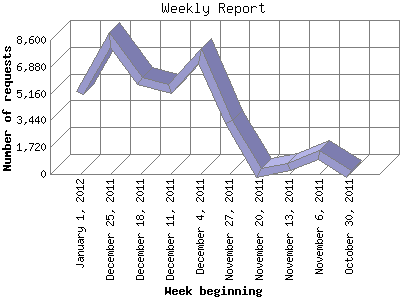

The Weekly Report identifies the activity for each week within the report
time frame. Remember that one page hit can result in several server requests
as the images for each page are loaded.
Note: Depending on the
report time frame for this report the first and last week may not represent
a full seven day week, resulting in lower hits.

| Week beginning | Number of requests | Number of page requests | |
|---|---|---|---|
| 1. | October 30, 2011 | 16 | 11 |
| 2. | November 6, 2011 | 1,212 | 122 |
| 3. | November 13, 2011 | 445 | 15 |
| 4. | November 20, 2011 | 54 | 20 |
| 5. | November 27, 2011 | 3,351 | 84 |
| 6. | December 4, 2011 | 7,604 | 69 |
| 7. | December 11, 2011 | 5,432 | 50 |
| 8. | December 18, 2011 | 5,989 | 53 |
| 9. | December 25, 2011 | 8,568 | 63 |
| 10. | January 1, 2012 | 5,223 | 57 |
Most active week beginning November 6, 2011 : 122 pages sent. 8,568 requests handled.
Weekly average: 54 pages sent. 3,789 requests handled.
This report was generated on January 7, 2012 02:05.
Report time frame November 4, 2011 02:24 to January 6, 2012 00:00.
| Web statistics report produced by: analog 6.0 / Report Magic 2.21 |